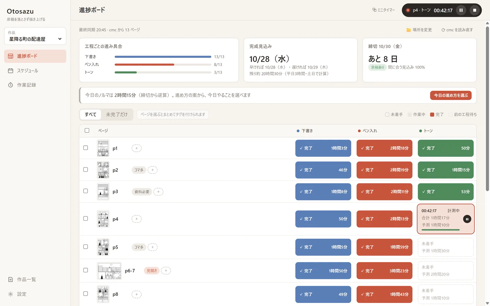
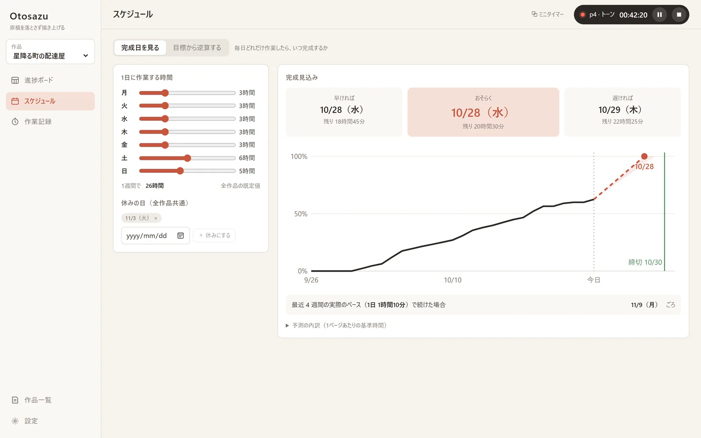
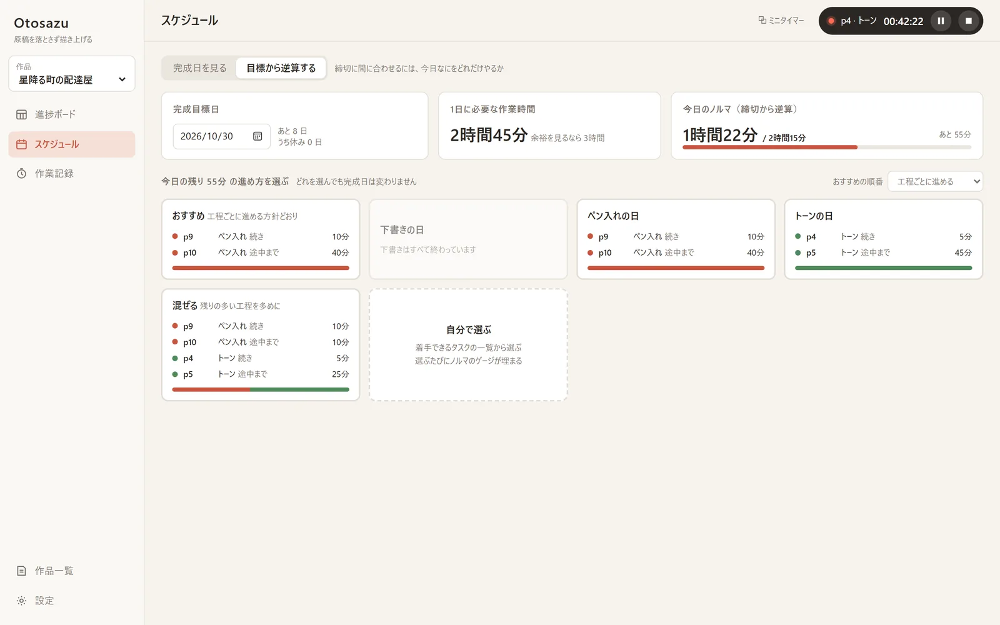
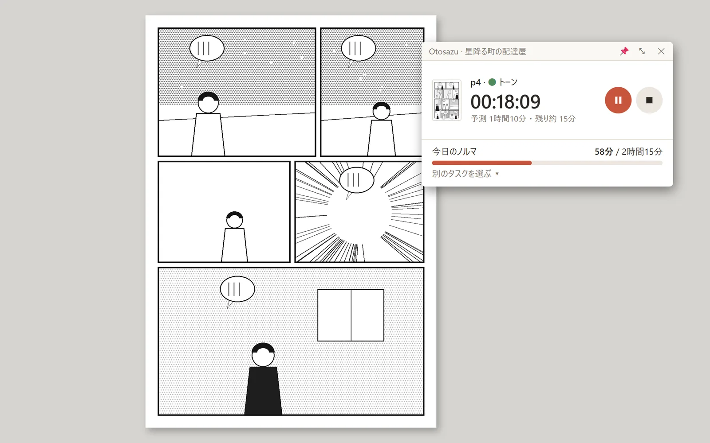
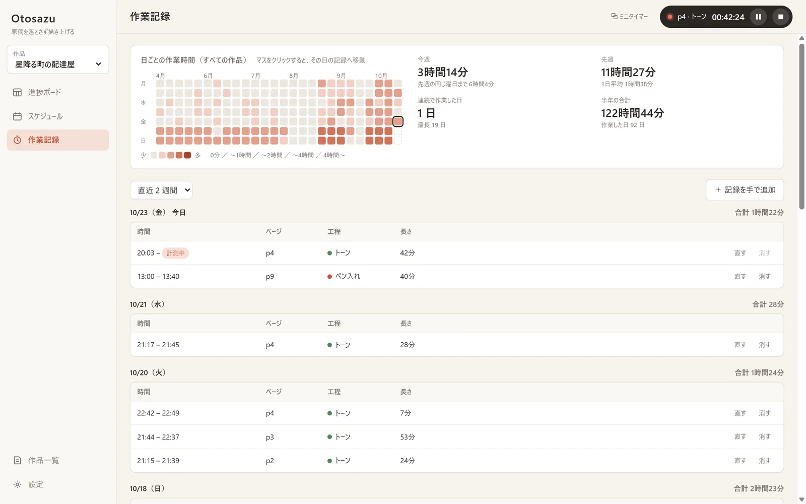

マスをクリックするだけで記録
漫画ファイル（.cmc）を選ぶと、ページの一覧とサムネイルを自動で読み込みます。これから作業するマスをクリックすれば計測が始まり、止め忘れも見張ります。
漫画・イラスト制作のスケジュール管理
CLIP STUDIO PAINT のファイルと連動して、ページ × 工程ごとの作業時間を記録。 記録がたまるほど「このペースだと何日に完成するか」「締切に間に合わせるには今日なにをどれだけやるか」が正確になっていきます。

漫画ファイル（.cmc）を選ぶと、ページの一覧とサムネイルを自動で読み込みます。これから作業するマスをクリックすれば計測が始まり、止め忘れも見張ります。
曜日ごとの作業時間から「早ければ／おそらく／遅ければ」の 3 つの完成見込み日を出します。1 ページあたりの時間は実績から学ぶので、使うほど正確になります。
締切を入れると、1 日に必要な時間と今日のノルマが出ます。「ペン入れの日」「混ぜる」など、今日の進め方の案から気分で選べます。
短い締切の依頼と 2 か月後の漫画を同時に進めるときは、全作品の残りを 1 日の時間に一緒に割り振ります。どの締切に時間が足りないかを知らせ、収まる締切を勧めます。
進み具合の要約を閲覧 URL で共有できます。相手はブラウザで開くだけ。原稿の絵やメモは送らず、作品名や作業時間は隠せます。
CLIP STUDIO PAINT EX の共同作業機能で分担している作品は、誰がどのページを担当し、いつ反映したかをボードに映します。アシスタント側に何も入れる必要はありません。
イラスト（.clip / .psd）のファイルを束ねた作品、ぬいぐるみや模型・小説のようなファイルを持たない作品にも使えます。工程は自分の作り方に合わせて作れます。




無料です。BOOTH で配布しています。お使いのパソコンに合わせてどちらか 1 つをダウンロードしてください。